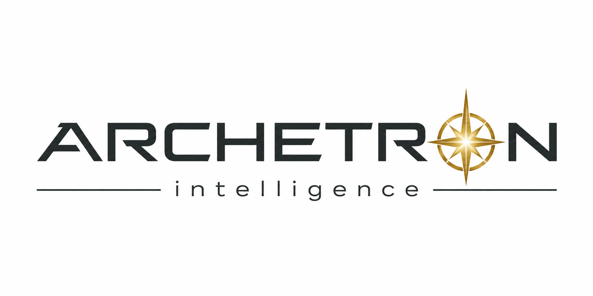

Building the span between machine intelligence and human experience.
Explore The Span →Durable capabilities between the model and the human.

ARCHETRON is the assembled architecture formed when VOLSHi's core systems work together as one. The jobs come first. The technologies performing them reveal themselves when you inspect the machine.
Intelligence is moving faster than the systems required to trust it.
VOLSHi is the origin of identity for machine intelligence. We build the span between machine intelligence and human experience — persistent identity that accumulates history, earns trust, and carries the relationship across every model change.
Intelligence without identity is just computation: a black box with no past and no accountability. The model can change. The relationship shouldn’t have to.
VOLSHi is nestled in the heart of North Carolina’s Research Triangle — in the orbit of Duke, UNC, and NC State, three powerhouse universities turning out the minds that will build what comes next.
VOLSHi builds the span between machine intelligence and human experience.